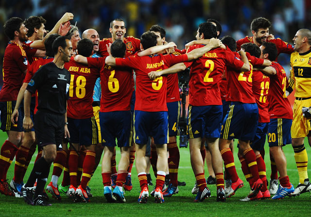
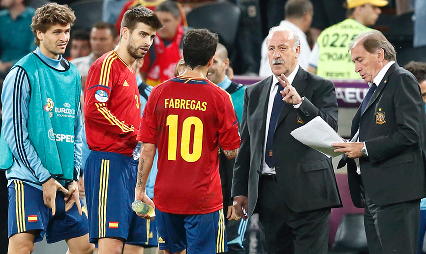
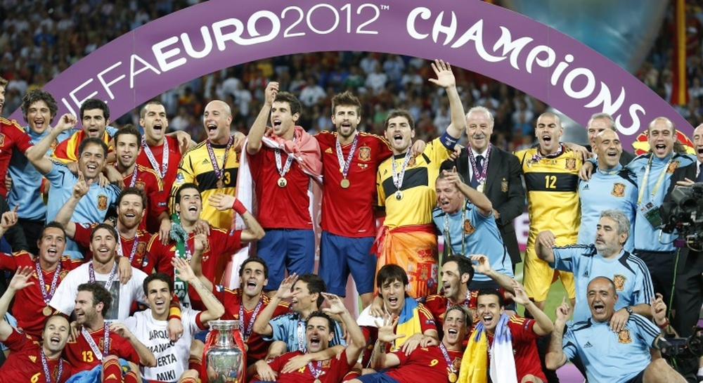

.
FASE DE GRUPOS
Grupo A
<<<<<<< HEAD
=======
>>>>>>> 83c656356256792487e4f2e141af6cf9f398bf14
- República Checa 6 pts
- Grecia 4 pts
- Rusia 4 pts
- Polonia 2 pts
<<<<<<< HEAD
Grupo C
- España 7 pts
- Italia 5 pts
- Croacia 4 pts
- República de Irlanda 0 pts
Grupo B
=======
Grupo C
- España 7 pts
- Italia 5 pts
- Croacia 4 pts
- República de Irlanda 0 pts
Grupo B
>>>>>>> 83c656356256792487e4f2e141af6cf9f398bf14
- Alemania 9 pts
- Portugal 6 pts
- Dinamarca 3 pts
- Holanda 0 pts
<<<<<<< HEAD
Grupo D
Grupo D
>>>>>>> 83c656356256792487e4f2e141af6cf9f398bf14
- Inglaterra 7 pts
- Francia 4 pts
- Ucrania 3 pts
- Suecia 3 pts
<<<<<<< HEAD
=======
>>>>>>> 83c656356256792487e4f2e141af6cf9f398bf14
CUARTOS DE FINAL
Inglaterra vs Italia ---> 0-1
España vs Francia ---> 2-0
Alemania vs Grecia ---> 4-2
República Checa vs Portugal ---> 0-1
SEMIFINALES
Alemania vs Italia ---> 0-1
Portugal vs España ---> 2-0
FINAL
<<<<<<< HEAD
España vs Italia
=======
>>>>>>> 83c656356256792487e4f2e141af6cf9f398bf14
 Después de ganar la Eurocopa en 2008, y la Copa del Mundo en 2010, la selección española acude a la Eurocopa 2012 en busca de un histórico triplete. En su estreno en el torneo ante la selección de Italia, el equipo azzurro salió valiente ante los campeones.Con el paso de los minutos los españoles comenzaron a encontrar su fútbol, aunque un excelente pase de Pirlo, lo ejecutaría Di Natale para inaugurar el marcador. Pese al mazazo España reaccionó bien, y sólo 3 minutos después Cesc lograba la igualada. Con los goles el partido se agitó y todo saltó por los aires, aunque ambos equipos desperdiciarían sus oportunidades, y los dos favoritos del grupo se tuvieron que conformar con el empate.
Después de ganar la Eurocopa en 2008, y la Copa del Mundo en 2010, la selección española acude a la Eurocopa 2012 en busca de un histórico triplete. En su estreno en el torneo ante la selección de Italia, el equipo azzurro salió valiente ante los campeones.Con el paso de los minutos los españoles comenzaron a encontrar su fútbol, aunque un excelente pase de Pirlo, lo ejecutaría Di Natale para inaugurar el marcador. Pese al mazazo España reaccionó bien, y sólo 3 minutos después Cesc lograba la igualada. Con los goles el partido se agitó y todo saltó por los aires, aunque ambos equipos desperdiciarían sus oportunidades, y los dos favoritos del grupo se tuvieron que conformar con el empate.
En su segundo encuentro el combinado español daría una auténtica exhibición ante Irlanda. Al poco de arrancar el partido, un derechazo de Fernando Torres hacía el primero. Una vez abierta la muralla verde España fue un vendaval, y Silva apareció para alojar con suavidad el balón en la red. Los españoles apabullaban a los irlandeses, y Torres acabaría resolviendo con finura un mano a mano. En la recta final, un chutazo de Fábregas cerraba la goleada. En el último partido del grupo España tenía que confirmar su clasificación ante Croacia. Al equipo de Del Bosque le costaba encontrar agujeros en la malla croata, y en una contra letal, Casillas sacaba sus alas para mantener a su equipo con vida. El corazón de los españoles estaba en un puño, ya que un gol croata mandaba a los campeones para casa. Pero en un dramático final, Cesc elevó la pelota por encima de la defensa e Iniesta concedía la gloria a Navas que remataba a placer. El combinado español, conseguía con una sufrida victoria el liderato del grupo.
En los cuartos de final España buscaría su primera victoria en partido oficial ante la selección de Francia. Pasado el cuarto de hora, un templado centro de Jordi Alba lo cabeceó Xabi Alonso picado a la red. Los galos trataron de reponerse del golpe, pero Casillas evitaba la reacción francesa. En la segunda mitad el conjunto de Del Bosque incrementó su presión, aunque ‘les bleus’ intentaban por todos los medios forzar la prórroga. Sin embargo, en el último minuto un derribo de Revelleire sobre Pedro fue señalado como penalti, y Xabi Alonso en su centenario como internacional, lograba su doblete y aseguraba el pase a semifinales. Allí, España pelearía por un puesto en la gran final ante la Portugal de Cristiano Rolando. Los de Del Bosque salieron mostrando su orgullo de campeón, pero los lusos fueron complicándoles el partido, y el encuentro se marchaba a una prórroga llena de incertidumbre. En el tiempo extra a Portugal se le fue acabando la gasolina, y España ofreció su mejor versión, pero tras 120 minutos de tensión, el finalista se tendría que decidir en una dramática tanda de penaltis. En el primer lanzamiento Rui Patricio despejaba el tiro de Xabi Alonso, sin embargo a continuación Casillas sacaba el disparo de Moutinho. Portugueses y españoles se mostraron después impecables, hasta que en el cuarto lanzamiento, Bruno Alves se estrellaba contra el larguero. En el penalti decisivo, Cesc metía a España en una nueva final.
El 1 de Julio de 2012, España e Italia disputan en Kiev la final de la Eurocopa. El equipo español salió totalmente conectado, y encarriló pronto el partido cuando al cuarto de hora Silva de cabeza culminaba una jugada colectiva. La selección azzurra tuvo a continuación unos minutos de peligro, pero España se mantuvo fiel a su estilo, y antes del descanso Jordi Alba entraba como un cohete y batía a Buffon en el mano a mano. Tras la reanudación Italia intentó levantarse, pero la lesión de Motta dejaba a su equipo con diez, y Fernando Torres aprovechó un gran pase de Xavi para rematar el encuentro. En la recta final, Mata marcaba a puerta vacía tras otra gran jugada española. El equipo español, con una exhibición para la eternidad, pasó por encima de Italia y ponía nuevamente el continente futbolístico a sus pies, instalándose en el paraíso con una trilogía de leyenda.
<<<<<<< HEAD